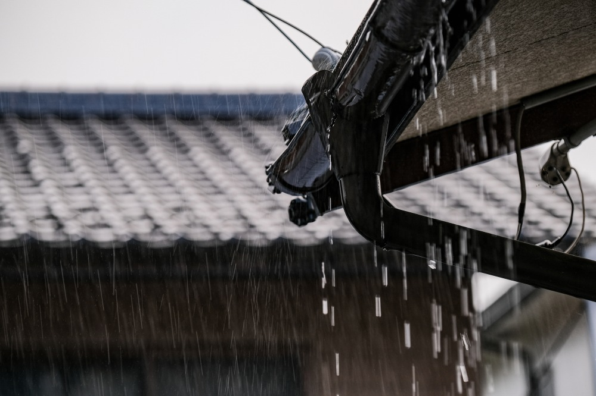

外観の変化
建物の見た目が一新されます。色の選び方しだいで、お家のイメージをがらりと変えることもできます。

カビ・藻にも強くなります
塗料に含まれる抗菌成分が、コケやカビの発生を防ぎ、腐食を防止します。

外壁が丈夫になります
目地を既存のままにせず打ち直すことで、外壁を長持ちさせます。
建物の寿命を延ばします
ひび割れからの雨水の侵入を防ぎます。定期的に塗り替えることで、建物の傷みを抑えられます。

雨に強くなります
撥水性で雨を弾き、色あせやザラつきを防ぎます。ツヤが出るのもうれしいポイントです。
暑さに強くなります
屋根に遮熱シリコン塗料を使うことで、夏の暑さや室内の温度上昇を和らげます。